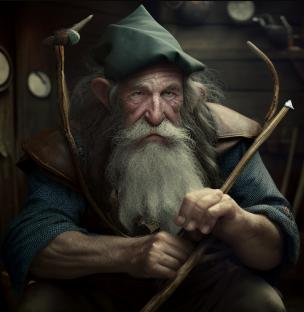

The adventurers (Phineas, Isabelle, Nothoniol, Saleth, Caura, and Kathber) rent a sailboat and head for New Hel, arriving just after sunset. Isabelle sniffs out and intimidates a liberal necromancy student, who shares rumors that a secret book of death has been stolen, and to ask the headmaster, Professor Deadtree, for more information. Nothoniol goes to the library to learn a spell. The others confront Professor Deadtree at his office, after Phineas checks to make sure his door isn't trapped. They establish through pleasantries that the professor if familiar with the wizard of Fenristan. The professor explains that orcs seem to have stolen an ancient book containing secret information about death. He explains that necronmancy in inexperienced hands is a terrible recipe -- raising someone from the dead is just the ripple on the water, and if you don't do it right, the whole ocean comes though. He offers automatic scrolls of revivify in exchange for dealing with the orcs. Caura expresses particular interest in a scroll of feather-fall, which he agrees to add to the reward. He points them to a forest just to the north. They meet up with Nothoniol and head to the forest.
Striding up to the edge of the forest, the adventures see a campfire and hear orcish grunts. Isabelle, who can speak, hears that they are speaking quickly about using a book. There's some audible scrambling as one of the orcs opens the book. Only Nothoniol, the furthest and a lucky distance back, witnesses a few things happen at once: the orcs are disassembled and splash to the ground as blood, quenching their campfire, and his allies are all knocked out. Nothoniol takes some time to stabilize his friends, then takes and hides the book. He then waits while his friends recover. When they do, Nothoniol says what happened but that he couldn't find the book. Everyone except Isabelle realizes he's lying, but don't bring it up. They head back to the academy to recuperate.
In the morning, the group gets brunch and Nothoniol makes an excuse while he goes to see the headmaster to get their reward, which he keeps hidden. He learns that the outcome of opening the book could've gone a lot worse. He regroups and they head to Florfinthel.
At Florfinthel, Saleth finds the oldest bowmaker and tells his story. While in prison for being falsely accused of burning down a temple, Saleth witnessed his cellmate meticulously plan his escape and eventually execute it. The bowmaker asks what Saleth learned, and Saleth thinks. While his cellmate did ultimately escape, the plan didn't go perfectly smoothly, despite all the impressive planning. So he learned that no plan goes without a hitch. The bowmaker rewards Saleth with an Oathbow.
Isabelle breaks off to snoop around. She does not speak elvish, but happens upon a mute elf making signs. She sees the elf sign something that looks like snow and something that looks like a tree and concludes that this elf knows something about their quest.
Phineas and Nothoniol go to find the head elf to see if they know anything. The elf also recognizes the wizard of Fenristan, knows about snow and that a tree is in need of help, and that the wizard has it handled.
Kathber and Caura go fishing and catch a feast that they share with the party.
That night, Isabelle asks Nothoniol to share a tent, hoping to check for any foul play related to the book the orcs had. However, Nothoniol is interested to share a tent with Caura, who turns him down. Instead Caura and Isabelle share a tent. Kathber and Phineas find elf hosts to take them in. Saleth finds a tree to perch in.
The adventurers next sail for the destination indicated by the wizard, but are caught by an orc ship while in open sea. The orc ship harpoons their ship, attaching the two. Two orcs throw javelins while four others attempt to board, one of which tumbles, snaps their neck, and drowns. The group starts to find their battle chemistry, but Saleth stands out for landing the most killing blows. Isabelle attempts a complicated flourish on the final blow, tumbles, hits her head, knocks herself out, and begins to drown. The others recover and stabilize her. After ransacking the orc ship, the adventurers come out with some gold, a gem, and a magical axe.